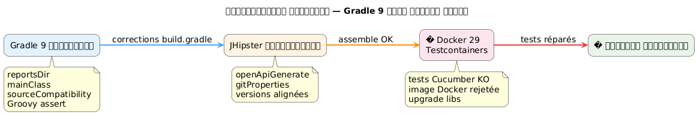

�যখন Gradle 9, Docker 29 এবং Testcontainers তুখে পাচে : JHipster বিল্ডের ডিবাগিং
Publié le 25 April 2026
- পরিস্থিতি : একটি JHipster প্রকল্প, একটি বিল্ড যা আর লোড হয় না
- ত্রুটি ১ : অদৃশ্য ভেরিয়েবল `reportsDir
- ত্রুটি ২:
main = \"…\"Gradle 9-এ আর বিদ্যমান নেই - ত্রুটি ৩ :
sourceCompatibilityএখন একটি প্রকল্পের বৈশিষ্ট্য নয় - ত্রুটি ৪ : Groovy ত্রিভুক্ত দাবি
- ত্রুটি 5 : অস্পষ্ট নির্ভরতা
compileKotlin→ `openApiGenerate - ভুল ৬:
generateGitPropertiesFilterOutputStream.write()-এ ব্যর্থ হয় - অবশেষে : Testcontainers পর্বে আসে
- ফেজ ১ : ডকার-জাভা পাথ
- ফেজ ২ : ওয়েব অনুসন্ধান এবং ব্রেডক্রাম্ব GitHub
- প্যায় ৩: নাম পরিবর্তিত আর্টিফ্যাক্টের জাল
- ফেজ 4 : সমাধানকে বাধ্য করুন
- শেষ ফল
- সংশোধনের সারাংশ টেবিল
- উপসংহার
আপনি ইতিমধ্যে সেই মুহূর্তটি অনুভব করেছেন যেখানে একটি সহজ`./gradlew build`আপনি যদি দিনে একশো বার চালান, তা একদম একটি কখনো না Seen ত্রুটিতে crash করা শুরু করে ? একাদশ পরপর ত্রুটির গুণফল নিয়ে, ডকার ইঞ্জিন ২৯-র অসংসাম্য এর একটি ভালো ডোজ যোগ করুন, গ্রেডল 9 ছড়িয়ে দিন যা দশ বছর যাবতীয়ভাবে ব্যবহৃত API গুম করে দেন। এটি পুরোপুরি লগবুক।
উদ্দেশ্য: অসংগতির শ্রেণী দেখানো।
👉 স্পষ্ট, Gradle-কে কেন্দ্রীভুক্ত
Failed to generate image: PlantUML preprocessing failed: [From <input> (line 4) ] @startuml left to right direction title Gradle 9 মাইগ্রেশন rectangle "1 ^^^^^ Syntax Error? (Assumed diagram type: class) @startuml left to right direction title Gradle 9 মাইগ্রেশন rectangle "1 reportsDir" as A rectangle "2\nmainClass" as B rectangle "3 sourceCompatibility" as C rectangle "4\nGroovy assert" as D A --> B B --> C C --> D @enduml
লক্ষ্য : টুটে গেছে প্লাগইনগুলোকে আলাদা করা।
Failed to generate image: PlantUML preprocessing failed: [From <input> (line 8) ] @startuml left to right direction title সংশোধনযোগ্য প্লাগইন skinparam shadowing false skinparam roundcorner 18 rectangle "1\nopenApiGenerate" as A #FFF3E0 rectangle "2 ^^^^^ Syntax Error? (Assumed diagram type: component) @startuml left to right direction title সংশোধনযোগ্য প্লাগইন skinparam shadowing false skinparam roundcorner 18 rectangle "1\nopenApiGenerate" as A #FFF3E0 rectangle "2 gitProperties 2.5.7" as B #FFF3E0 rectangle "3\nসংস্করণ\nসংশোধিত" as C #E3F2FD rectangle "4 জোড়া কর OK" as D #E8F5E9 A --> B B --> C C --> D @enduml
উদ্দেশ্য: runtime সমস্যা।
Failed to generate image: PlantUML preprocessing failed: [From <input> (line 10) ] @startuml left to right direction title Docker 29 + Testcontainers skinparam shadowing false skinparam roundcorner 18 skinparam defaultFontSize 14 rectangle "1\nসম্বদ্ধ সঠিক" as A #E8F5E9 rectangle "2 ^^^^^ Syntax Error? (Assumed diagram type: component) @startuml left to right direction title Docker 29 + Testcontainers skinparam shadowing false skinparam roundcorner 18 skinparam defaultFontSize 14 rectangle "1\nসম্বদ্ধ সঠিক" as A #E8F5E9 rectangle "2 টেস্ট Cucumber FAIL" as B #FFEBEE rectangle "3 Testcontainers 1.32 অস্বীকৃত" as C #FFF3E0 rectangle "4 Upgrade संस्कরণ" as D #E3F2FD rectangle "5 বিল্ড শেষে ঠিক আছে" as E #E8F5E9 A --> B B --> C C --> D D --> E @enduml

পরিস্থিতি : একটি JHipster প্রকল্প, একটি বিল্ড যা আর লোড হয় না
প্রকল্প`edster`এটি 2024 সালে জেনারেটেড JHipster অ্যাপ্লিকেশন। মূল বিল্ড স্ক্রিপ্ট`build.gradle`এটি মাসে মাসে স্থির ছিল। তারপর তারা সংস্করণ আপগ্রেড করতে সিদ্ধান্ত নেয়।
উপাদান |
লক্ষ্য সংস্করণ |
Gradle |
9.4.1 |
Java |
21.0.11-tem (Eclipse Temurin) |
JHipster |
8.x (ফ্রেমওয়ার্ক`tech.jhipster:jhipster-framework:8.11.0`) |
Spring Boot |
3.4.5 |
কটলিন |
2.3.0 |
Docker Engine |
29.4.1 (API 1.54) |
জাভা সংস্করণের পরিবর্তন SDKMAN এর মাধ্যমে হয় :
sdk use java 21.0.11-temপ্রথম লঞ্চ :
$ ./gradlew build --no-daemon
FAILURE: Build failed with an exception.
* Where:
Build file '/home/.../edster/build.gradle' line: 18
* What went wrong:
An exception occurred applying plugin request [id: 'jhipster.cucumber-conventions']
> Failed to apply plugin 'jhipster.cucumber-conventions'.
> Could not create task ':cucumberTest'.
> Could not create task ':consoleLauncherTest'.
> Could not set unknown property 'reportsDir' for task ':consoleLauncherTest'আমরা বিল্ড স্ক্রিপ্টের লোডিং থেকে এVEN উড়ে যাই না।buildSrc/src/main/groovy/jhipster.cucumber-conventions.gradle.
.
ত্রুটি ১ : অদৃশ্য ভেরিয়েবল `reportsDir
স্ক্রিপ্ট`jhipster.cucumber-conventions.gradle`ব ধরে :
tasks.register('consoleLauncherTest', JavaExec) {
dependsOn(testClasses)
String cucumberReportsDir = file("$buildDir/reports/tests")
outputs.dir(reportsDir) // <-- reportsDir n'existe PAS
classpath = sourceSets["test"].runtimeClasspath
main = "org.junit.platform.console.ConsoleLauncher"
// ...
}সংজ্ঞায়িত ভেরিয়েবল`cucumberReportsDir`. ব্যাবহারিতটি আছে`reportsDir`-- যেখানেও সংজ্ঞায়িত করা হয়নি.
সংশোধন : outputs.dir(cucumberReportsDir)
ত্রুটি ২: main = \"…\" Gradle 9-এ আর বিদ্যমান নেই
অবিলম্বে পুনরায় চালু :
Could not set unknown property 'main' for task ':consoleLauncherTest' of type org.gradle.api.tasks.JavaExec.Gradle 9 প্রপার্টি মুছে ফেলে`main`উপকারে`mainClass`কার্য সংক্রান্ত`JavaExec`.
সংশোধন:`mainClass = "org.junit.platform.console.ConsoleLauncher"`
ত্রুটি ৩ : sourceCompatibility এখন একটি প্রকল্পের বৈশিষ্ট্য নয়
নতুন ত্রুটি :
Could not set unknown property 'sourceCompatibility' for root project 'edster' of type org.gradle.api.Project.মূল স্ক্রিপ্ট ছিল :
sourceCompatibility=17
targetCompatibility=17Gradle 9 রুট লেভেল থেকে এই প্রপার্টিগুলো মুছে ফেলে। এগুলোকে একটি ব্লকে রাখতে হবে।java.
সংশোধন :
java {
sourceCompatibility = JavaVersion.VERSION_21
targetCompatibility = JavaVersion.VERSION_21
}ত্রুটি ৪ : Groovy ত্রিভুক্ত দাবি
পুরনো স্ক্রিপ্টে ছিল :
assert System.properties["java.specification.version"] == "17" || "21" || "24"গ্রুভি,"21" et "24"`স্ট্রিংস truthy। অভিব্যক্তি সমাধান হয়(… == "17") || true || true`, যে সদা সত্য — কিন্তু সিনট্যাক্স অমিল আশিত কঠোর দাবির জন্য
সংশোধন:
assert System.properties["java.specification.version"] in ["17", "21", "23", "24"]ত্রুটি 5 : অস্পষ্ট নির্ভরতা compileKotlin → `openApiGenerate
বিল্ড প্রগ্রেস হচ্ছে। কোটলিন কোম্পাইলেশন সফল। তারপর :
Task ':compileKotlin' uses this output of task ':openApiGenerate'
without declaring an explicit or implicit dependency.Gradle 9 কাজের মধ্যে নিহিত নির্ভরতা প্রত্যাখ্যাত করে। যেহেতু`compileKotlin`উৎপন্ন উৎস পড়ে`openApiGenerate`, এটি ঘোষণা করা দরকার।
সংশোধনঅন্দরে`build.gradle`:
afterEvaluate {
tasks.named("compileKotlin").configure {
dependsOn(tasks.named("openApiGenerate"))
}
}Le `afterEvaluate`কারণ প্রয়োজন`openApiGenerate`একটি এক্সটেনশন (plugin OpenAPI Generator) এবং কনফিগারেশন পর্বের সময় সরাসরি অ্যাক্সেসযোগ্য কোনো টাস্ক নয়।
ভুল ৬: generateGitProperties FilterOutputStream.write()-এ ব্যর্থ হয়
জাভা কম্পাইলেশন সফল হয়। উপকরণগুলি প্রক্রিয়া করা হয়। তারপরে :
> Task :generateGitProperties FAILED
No signature of method: java.io.FilterOutputStream.write() is applicable for argument types: (Integer) values: [103]প্লাগইনটি`gradle-git-properties`version 2.5.0 Java 21 / Gradle 9-এ অসমঞ্জস. একটি অভ্যন্তরীন বাগ কল করার চেষ্টা করছে`write(int)`Groovy এর মাধ্যমে একটি প্রবাহ যা তা বন্ধ
শোধনমধ্যে`gradle.properties` :
gitPropertiesPluginVersion=2.5.7অবশেষে : Testcontainers পর্বে আসে
একেবার পর্যন্ত, এটি শুদ্ধ "build script debugging" ছিল। প্রতিটি ত্রুটি বিল্ড স্ক্রিপ্টে Gradle 9 বা Java 21 অসংতি ছিল। উপরের ছয়টি সংশোধনের পর, এটা`./gradlew assemble`সফলভাবে পাস করে।
কিন্তু`./gradlew build`এক্সিকিউট করে এছাড়াও পরীক্ষাগুলো, এবং Cucumber পরীক্ষাগুলো Testcontainers ব্যবহার করে একটি অস্থায়ী PostgreSQL শুরু করার জন্য।
Could not find a valid Docker environment.
EnvironmentAndSystemPropertyClientProviderStrategy: failed with exception BadRequestException
(Status 400: {"message":"client version 1.32 is too old. Minimum supported API version is 1.40"}
UnixSocketClientProviderStrategy: failed with exception BadRequestException
(Status 400: {"message":"client version 1.32 is too old. Minimum supported API version is 1.40"}Testcontainers ডকারের সাথে যোগাযোগ করতে অক্ষম। দুটি ভিন্ন পদ্ধতি (পরিবেশ ভেরিয়েবল + ইউনিক্স সকেট) একই ত্রুটিতে ব্যর্থ হয়।
Failed to generate image: PlantUML preprocessing failed: [From <input> (line 5) ] @startuml skinparam backgroundColor #FEFEFE skinparam handwritten false actor "Testcontainers ^^^^^ Syntax Error? (Assumed diagram type: sequence) @startuml skinparam backgroundColor #FEFEFE skinparam handwritten false actor "Testcontainers 1.20.6" as TC participant "docker-java 3.4.1" as DJ participant "Docker ইঞ্জিন 29.4.1" as DE TC -> DJ : new DockerClient() DJ -> DE : GET /_ping\nUser-Agent: docker-java/3.4.1\nAPI-Version: 1.32 DE --> DJ : HTTP 400 Bad Request\nclient version 1.32 is too old.\nMinimum supported API version is 1.40 DJ --> TC : BadRequestException TC --> TC : Could not find a valid\nDocker environment note right of DE Docker Engine 29.x impose API minimum = 1.40 (défaut ancien : 1.24) end note note left of DJ docker-java 3.4.1 envoie hardcoded API version 1.32 dans l'en-tête HTTP end note @enduml
ফেজ ১ : ডকার-জাভা পাথ
প্রথম ধাপ: Testcontainers‑এর द्वारा ব্যবহৃত জাভা ডকার ক্লায়েন্ট API সংস্করণ পাঠায়।1.32`তার HTTP handshake-এ, কিন্তু Docker Engine 29.4.1 ন্যূনতম চাহিশ`1.40. সমস্যা ক্লায়েন্ট স্তরে আছে, ড্যামন নয়।
Testcontainers 1.20.6によって समाधित docker-java संस्करण जाँच :
$ ./gradlew dependencies --configuration testRuntimeClasspath | grep docker-java
+--- com.github.docker-java:docker-java-api:3.4.1
+--- com.github.docker-java:docker-java-transport:3.4.1docker-java 3.4.1, Testcontainers 1.20.6 থেকে। docker-java এর সর্বজনীন সর্বশেষ সংস্করণ 3.5.1। আমরা সংস্করণ আপগ্রেড বাধ্য করার চেষ্টা করি মাধ্যমে`resolutionStrategy`ব্লকে`configurations` de build.gradle:
configurations {
all {
resolutionStrategy.eachDependency { details ->
if (details.requested.group == "com.github.docker-java"
&& details.requested.name.startsWith("docker-java")) {
details.useVersion("3.5.1")
}
}
}
}বিল্ডটি পুনরায় চালু করুন। একই ত্রুটি:`client version 1.32 is too old`.
গ্রেডল ক্যাশ যাচাই : JAR ফাইলগুলো সঠিকভাবে পুনরায় ডাউনলোড করা হয়েছে, কিন্তু ত্রুটি বজায় থাকে। docker-java 3.5.1 এখনও পাঠায়`1.32`. এই সংস্করণ তাই Docker Engine 29.4.1-এর জন্য পর্যাপ্ত নয়।
শুচিকরন Kriya:গ্রেডল ক্যাশটি সম্পূর্ণরূপে খালি করুন, নিশ্চিত থাকতে হলে :
rm -rf ~/.gradle/caches
rm -rf /path/to/project/.gradleপরিষ্কার করার পর পূর্ণ পুনরায় চালু। একই ত্রুটি।
ফেজ ২ : ওয়েব অনুসন্ধান এবং ব্রেডক্রাম্ব GitHub
docker-java 3.5.1 পর্যাপ্ত নেই। শুধু এই সমস্যার সমাধান করেছেন কি না খুজে বের করতে হবে।
টেস্টকনটেইনرز-জাভা ও ডকর-জাভা ইসুয়ার লক্ষ্য-নির্ধারিত অনুসন্ধান:
site:github.com/testcontainers "client version 1.32 is too old"
site:github.com/docker-java "client version 1.32" Docker Engine 29প্রথম ফলাফল (অবিলম্বে) :
-
testcontainers-java#11210—
[Bug]: client version 1.32 is too old. Minimum supported API version is 1.44 -
testcontainers-java#11212—
[Bug]: Docker 29.0.0 could not find a valid Docker environment -
testcontainers-java#11491—
[Bug]: Incompatibility in Ubuntu Github runners with Docker Engine 29.1.*
ব্রেডক্রাম্ব পাথটি স্পষ্ট : Docker Engine 29.x তার ন্যूनতম API সংস্করণ বাড়িয়েছে`1.24`(পুরানো ত্রুটি) কে`1.40`. Testcontainers 1.20.x docker-java 3.4.x ব্যবহার করে API সংস্করণের চুক্তি করে, পাঠiye`1.32`. ডেমন ভদ্রভাবে কিন্তু দৃঢ়ভাবে প্রত্যাখ্যান করে।
ইস্যু #11491-এ, একজন মেইনটেইনার উত্তর দিয়েছেন:
_ হাই, আমার একটি প্রকল্প 2.0.3 সংস্করণে একটি GH রান্নারে ইঞ্জিন 29.1 দিয়ে চালু আছে এবং এটি কাজ করে। অনুগ্রহ করে আপনারা পরীক্ষা করুন যে কোনো সংস্করণের সংঘর্ষ নেই? অনুগ্রহ করে মনে রাখবেন, সমস্ত মডিউলের আগে একটি প্রিফিক্স ছিল`testcontainers-. সুতরাং, ভার্সন 2.x থেকে শুরু করে আমরা থেকে`postgresql to testcontainers-postgresql _
এই উত্তর ধারণ করেদুটি গুরুত্বপূর্ণ তথ্য :
-
Testcontainers 2.0.3+ সমস্যা সমাধান
-
মডিউলগুলো ছিলprefix
testcontainers-দিয়ে নামকৃত
প্যায় ৩: নাম পরিবর্তিত আর্টিফ্যাক্টের জাল
নাম পরিবর্তনটি কঠিন। Testcontainers 2.x-এ, আর কোনো পুরনো নাম এই নামে কাজ করে না :
পুরনো নাম (1.x) |
নতুন নাম (2.x) |
|
|
|
|
|
|
|
অপরিবর্তিত |
প্রথম চেষ্টা : BOM Testcontainers 2.0.5 প্রয়োগ করা এবং নতুন আর্টিফ্যাক্টের নামগুলো মধ্যে`build.gradle`.
dependencies {
testImplementation platform("org.testcontainers:testcontainers-bom:2.0.5")
testImplementation "org.testcontainers:testcontainers-postgresql"
testImplementation "org.testcontainers:testcontainers-jdbc"
testImplementation "org.testcontainers:testcontainers-junit-jupiter"
testImplementation "org.testcontainers:testcontainers"
}./gradlew build
FAILURE: Could not find org.testcontainers:jdbc:2.0.5.
Could not find org.testcontainers:junit-jupiter:2.0.5.testcontainers-bom BOM কাফি নেইকেন? Spring Boot 3.4.5 তার নিজের BOM (বিল্ড অফ মেটেরিয়াল) নির্ভরতা ব্যবস্থাপনা প্রদর্শন করে (spring-boot-dependencies) কেজয়িতটেস্টকন্টেইনার্স BOM-এ ট্রানজিটিভ রেজোলিউশনে। Spring Boot ঠিক করে`testcontainers` à 1.20.6, সুতরাং স্প্রিং বুটের BOM-এ স্পষ্টভাবে অন্তর্ভুক্ত না হওয়া সব আর্টিফ্যাক্ট (যekar nuevos_groups`testcontainers-*) পুরাতন নামের দিকে সমাধান হয়`1.20.6-- এই সংস্করণে আর নেই।
পরীক্ষার সময়ে`dependencies --configuration testRuntimeClasspath`,あります:
+--- org.testcontainers:testcontainers -> 1.20.6 (*)
| \--- org.testcontainers:testcontainers:2.0.5 -> 1.20.6Le →`পরিবর্তন নির্দেশ করে : Testcontainers 2.0.5 প্রয়োজনীয়, কিন্তু স্প্রিং বুট বাধ্য করে`1.20.6.
Failed to generate image: PlantUML preprocessing failed: [From <input> (line 9) ]
@startuml
skinparam backgroundColor #FEFEFE
skinparam handwritten false
skinparam componentStyle rectangle
left to right direction
component "build.gradle\n(ব্যবহারকারী)" as BG #E3F2FD {
rectangle "অনুরোধ
^^^^^
Syntax Error? (Assumed diagram type: class)
@startuml
skinparam backgroundColor #FEFEFE
skinparam handwritten false
skinparam componentStyle rectangle
left to right direction
component "build.gradle\n(ব্যবহারকারী)" as BG #E3F2FD {
rectangle "অনুরোধ
`testcontainers-bom:2.0.5" as REQ
rectangle "অনুরোধ
`testcontainers-postgresql" as REQ2
}
component "Maven Central" as MC #FFF3E0
component "ghoshanabolī" as DEC #E8F5E9 {
rectangle "testcontainers-bom:2.0.5`
নিরীহারিত 2.0.5" as BOM2
rectangle "spring-boot-dependencies:3.4.5`
ঠিক করে ১.২০.৬" as BOM1
}
component "গ্রেডল সমাধান" as RES #FFEBEE {
rectangle "জয়ী সংস্করণ
`testcontainers:1.20.6" as WIN #EF9A9A
}
BG --> DEC : "BOMs বিশ্লেষণ কর"
BOM2 --> RES : "প্রস্তাব কর ২.০.৫"
BOM1 --> RES : "প্রস্তাব 1.20.6"
WIN -> MC : "ডাউনলোড
testcontainers:1.20.6"
note bottom of WIN
Spring Boot BOM prime car
le plugin spring-boot applique
ses dépendances de gestion
après la résolution du consommateur
end note
@enduml
ফেজ 4 : সমাধানকে বাধ্য করুন
রৌনক কৌশল দ্বিগুণ হয়ে যায় :
-
docker-java-কে তার ৩.৭.১ সংস্করণে বাধ্য করুন (Docker Engine 29-এ সামঞ্জস্যপূর্ণ হিসাবে পরীক্ষা করা হয়েছে)
-
টেস্টকনটেইনার্স কোরকে ২.০.৫ তে বাধ্য করতে স্প্রিং বুট BOM বাইপাস করুন
Failed to generate image: PlantUML preprocessing failed: [From <input> (line 8) ]
@startuml
skinparam backgroundColor #FEFEFE
skinparam handwritten false
skinparam componentStyle rectangle
left to right direction
component "build.gradle
^^^^^
Syntax Error? (Assumed diagram type: class)
@startuml
skinparam backgroundColor #FEFEFE
skinparam handwritten false
skinparam componentStyle rectangle
left to right direction
component "build.gradle
(resolutionStrategy সাথে)" as BG #E8F5E9 {
rectangle "BOM Testcontainers
`2.0.5" as BOM2
rectangle "resolutionStrategy\n.eachDependency" as RS #66BB6A
}
component "সংঘাত সমাধান" as RESOLVED #E3F2FD {
rectangle "docker-java
`3.7.1` (বাধ্যতামূলক)" as DJ
rectangle "testcontainers
`2.0.5` (বাধাপ্রাপ্ত)" as TC #81C784
rectangle "testcontainers-postgresql
`2.0.5" as TPG
rectangle "testcontainers-jdbc
`2.0.5" as TJ
rectangle "testcontainers-junit-jupiter
`2.0.5" as TJJ
}
component "BOM Spring Boot\n(অপ্রকাশিত, অবরাইড)" as BOM1 #FFEBEE
component "Maven Central" as MC #FFF3E0
BG --> RESOLVED : "BOM Testcontainers 2.0.5
সরাসরি যায়"
RS -> DJ : "বল 3.7.1"
RS -> TC : "বল 2.0.5"
RESOLVED --> MC : "JARs ডাউনলোড কর\nDocker 29-সামঞ্জস্যপূর্ণ"
BOM1 -[#gray,dashed]-> RESOLVED : "অবহেলিত উপরে testcontainers
এবং docker-java"
note bottom of RS
Le `eachDependency` intercepte
la résolution Gradle AVANT
que le BOM Spring Boot ne gagne.
C'est une intervention chirurgicale.
end note
@enduml
শেষ সংশোধনমধ্যে`build.gradle`:
configurations {
all {
resolutionStrategy.eachDependency { details ->
if (details.requested.group == "com.github.docker-java"
&& details.requested.name.startsWith("docker-java")) {
details.useVersion("3.7.1")
}
if (details.requested.group == "org.testcontainers"
&& details.requested.name == "testcontainers") {
details.useVersion("2.0.5")
}
}
}
}
dependencies {
testImplementation platform("org.testcontainers:testcontainers-bom:2.0.5")
testImplementation "org.testcontainers:testcontainers-jdbc"
testImplementation "org.testcontainers:testcontainers-junit-jupiter"
testImplementation "org.testcontainers:testcontainers-postgresql"
testImplementation "org.testcontainers:testcontainers"
// ... autres dépendances Spring Boot
}Le `resolutionStrategy.eachDependency`একমাত্র উপায় বটিওএম বাইপাস করতে`spring-boot-dependencies`Spring Boot প্লাগইন tarafından পরিচালিত। সমতা পরীক্ষা উপর`details.requested.name == "testcontainers"`এটি ইচ্ছামত সীমাবদ্ধকৃত: আমরা শুধুমাত্র কোর মডিউলই বাধ্য করি। মডিউলগুলো`testcontainers-*`যারা স্পষ্টভাবে ঘোষিত Testcontainers 2.0.5 BOM অনুসরণ করে
শেষ ফল
$ ./gradlew build --no-daemon
> Task :consoleLauncherTest
[2 containers found]
[2 containers started]
[2 containers successful]
BUILD SUCCESSFUL in 1m 16sTestcontainers 2.0.5 + docker-java 3.7.1 এখন শেষ পর্যন্ত তাদের PostgreSQL কনটেইনারগুলো Docker Engine 29.4.1 মাধ্যমে তৈরি করতে সক্ষম হয়। শেষ ব্যবসায়িক ত্রুটি (Cucumber টেস্টে HTTP 500) একটি সম্পূর্ণভাবে বিল্ড স্ক্রিপ্ট থেকে স্বাধীন অ্যাপ্লিকেশন সমস্যা।
সংশোধনের সারাংশ টেবিল
| # | ফাইল | সমস্যা | সংশোধন |
|---|---|---|---|
1 |
|
পরিবর্তনশীল`reportsDir`অস্তিত্বহীন |
|
2 |
|
`main`অপ্রচলিত Gradle 9 |
|
3 |
|
`sourceCompatibility`top-level নিষিদ্ধ Gradle 9 |
ব্লক`java { sourceCompatibility = JavaVersion.VERSION_21 }` |
4 |
|
অ্যাসার্ট Groovy সিনট্যাক্সে অযুগ্ম |
|
5 |
|
অস্পষ্ট নির্ভরতা`compileKotlin`→ |
|
6 |
|
`gitPropertiesPluginVersion`অসংগত Java 21 |
|
7 |
Cache Gradle |
docker-java 3.5.1 পরীক্ষিত, সমাধান করা হয়েছে কিন্তু পর্যাপ্ত নয় |
শোধন + পরিবর্তন docker-java 3.7.1 |
8 |
|
Testcontainers 1.20.6 Docker Engine 29-এর সাথে অসংগত |
বল্যাপান Testcontainers 2.0.5 + prefix`testcontainers-*`+ resolutionStrategy vs Spring Boot BOM |
উপসংহার
আপনি যদি JHipster/Gradle বিল্ডটি Gradle 9 + Docker Engine 29 সংস্করণে আপগ্রেড করার পরে ক্র্যাশ হয়, তাহলে ত্রুটিগুলি দুটি বিভাগে ভাগ করা হয়:
বিল্ড স্ক্রিপ্টের ত্রুটি(প্রথম ৬টি) : Gradle 9 কিছু প্রোপার্টি এবং সিনট্যাক্সকে মুছে ফেলেছে, যা বছর ধরে কাজ করছিল`sourceCompatibility=, `main =, reportsDir). এগুলো মেকানিকাল মাইগ্রেশন, যা একবার আপনি নতুন API জানলে হয়।
ডকার রানটাইম ত্রুটি(২টি শেষ) : Docker Engine 29.4.1 বহির্গত 한다 API ক্লায়েন্টগুলো < 1.40. Testcontainers 1.20.6 (অনিবার্য Spring Boot 3.4.5) ব্যবহার করে docker-java 3.4.1 যে পাঠায় 1.32. একমাত্র Testcontainers 2.0.5 + docker-java 3.7.1 সমস্যার সমাধান করে, আর্টিফ্যাক্টের নামকরণের সাথে এবং সংস্করণ বাধ্য করে via`resolutionStrategy.eachDependency`একমাত্র উপായ作为 Spring Boot এর নিহিত BOM বাইপাস করতে
প্রজেক্টের মূলে Gradle বিল্ড স্ক্রিপ্ট এখন পরিষ্কার।`./gradlew build`Java 21, Gradle 9.4.1, Spring Boot 3.4.5 এবং Docker Engine 29.4.1-এ চলে যায়।